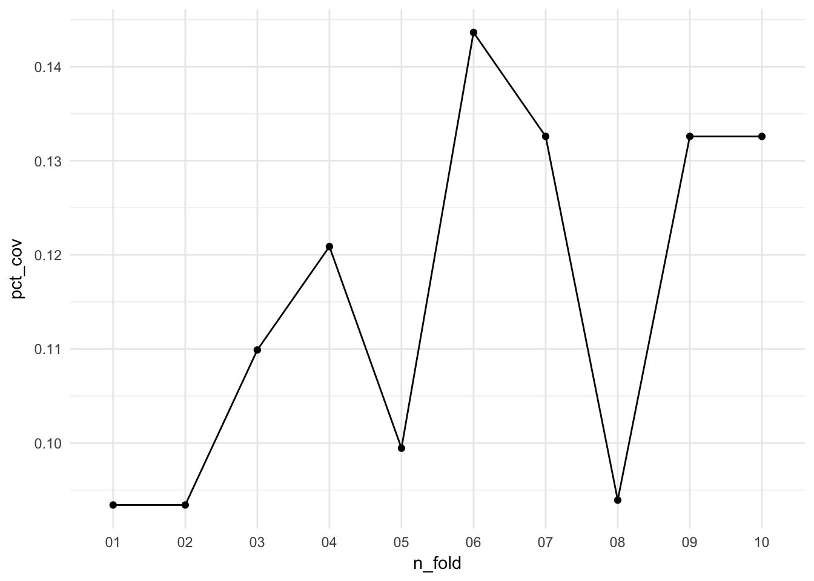
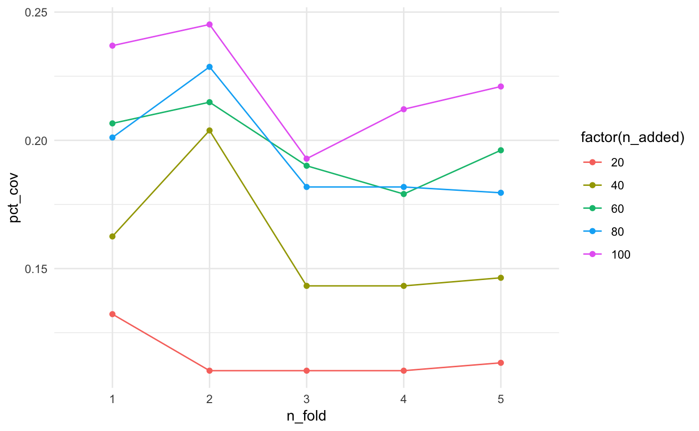
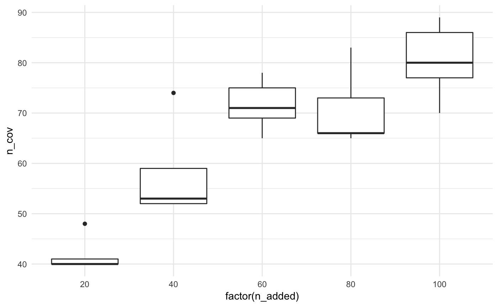
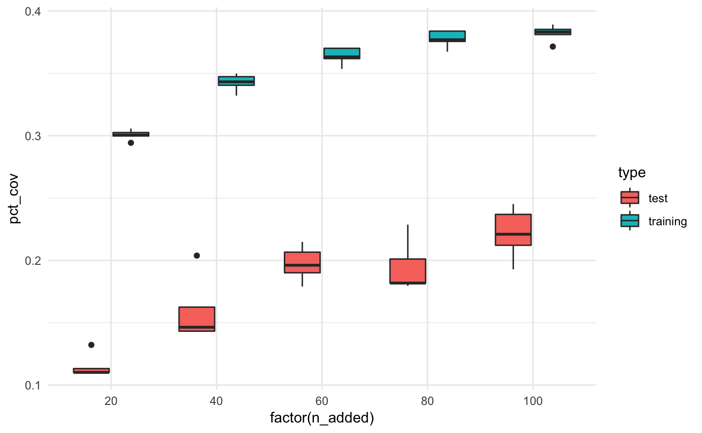

This vignette provides a guide to performing cross validation with modelr and maxcovr. In the future if this is a feature that is under demand, I will incorporate cross validation into maxcovr. In the mean time, here’s a vignette.
We will stick with the previous example using york and york_crime
library(maxcovr)
library(tidyverse)
# subset to be the places with towers built on them.
york_selected <- york %>% filter(grade == "I")
york_unselected <- york %>% filter(grade != "I")Thanks to the modelr package, it is relatively straightforward to perform cross validation.
# first we partition the data into 10 folds
library(modelr)
mc_cv <- modelr::crossv_kfold(york_crime, 10) %>%
# we change the test and train sets from the `resample`
# to tibbles
mutate(test = map(test,as_tibble),
train = map(train,as_tibble))This creates a dataframe with test and training sets
mc_cv## # A tibble: 10 × 3
## train test .id
## <list> <list> <chr>
## 1 <tibble [1,632 × 12]> <tibble [182 × 12]> 01
## 2 <tibble [1,632 × 12]> <tibble [182 × 12]> 02
## 3 <tibble [1,632 × 12]> <tibble [182 × 12]> 03
## 4 <tibble [1,632 × 12]> <tibble [182 × 12]> 04
## 5 <tibble [1,633 × 12]> <tibble [181 × 12]> 05
## 6 <tibble [1,633 × 12]> <tibble [181 × 12]> 06
## 7 <tibble [1,633 × 12]> <tibble [181 × 12]> 07
## 8 <tibble [1,633 × 12]> <tibble [181 × 12]> 08
## 9 <tibble [1,633 × 12]> <tibble [181 × 12]> 09
## 10 <tibble [1,633 × 12]> <tibble [181 × 12]> 10We then fit the model on the training set using map_df
# then we fit the model
system.time(
mc_cv_fit <- map_df(mc_cv$train,
~max_coverage(existing_facility = york_selected,
proposed_facility = york_unselected,
user = ., # training set goes here
n_added = 20,
distance_cutoff = 100))
)## user system elapsed
## 12.913 1.320 14.593Then we can use the summary_mc_cv function to extract out the summaries from each fold. This summary takes the facilities placed using the training set of users, and then takes the test set of users and counts what percent of these are being covered by the training model.
summarised_cv <- summary_mc_cv(mc_cv_fit, mc_cv)
summarised_cv %>% knitr::kable()| n_added | n_fold | distance_within | n_cov | pct_cov | n_not_cov | pct_not_cov | dist_avg | dist_sd |
|---|---|---|---|---|---|---|---|---|
| 20 | 01 | 100 | 17 | 0.0934066 | 165 | 0.9065934 | 1061.507 | 1152.357 |
| 20 | 02 | 100 | 17 | 0.0934066 | 165 | 0.9065934 | 1255.503 | 1586.894 |
| 20 | 03 | 100 | 20 | 0.1098901 | 162 | 0.8901099 | 1178.145 | 1538.558 |
| 20 | 04 | 100 | 22 | 0.1208791 | 160 | 0.8791209 | 1077.369 | 1362.671 |
| 20 | 05 | 100 | 18 | 0.0994475 | 163 | 0.9005525 | 1211.470 | 1602.905 |
| 20 | 06 | 100 | 26 | 0.1436464 | 155 | 0.8563536 | 1199.314 | 1605.301 |
| 20 | 07 | 100 | 24 | 0.1325967 | 157 | 0.8674033 | 1209.587 | 1608.879 |
| 20 | 08 | 100 | 17 | 0.0939227 | 164 | 0.9060773 | 1251.735 | 1557.213 |
| 20 | 09 | 100 | 24 | 0.1325967 | 157 | 0.8674033 | 1089.314 | 1497.305 |
| 20 | 10 | 100 | 24 | 0.1325967 | 157 | 0.8674033 | 1332.180 | 1605.903 |
Eyeballing the values, it looks like the pct coverage stays around 10%, but we can plot it to get a better idea. We can overlay the coverage obtained using the full dataset to get an idea of how we are performing.
summarised_cv %>%
ggplot(aes(x = n_fold,
y = pct_cov)) +
geom_point() +
geom_line(group = 1) +
theme_minimal()
Here we see that the pct_coverage doesn’t seem to change much across the folds.
Coming up next, we will explore how to perform cross validation as we increase the number of facilities added.
Ideally, there should be a way to do this using purrr, so we don’t have to fic 5 separate models, but perhaps this will change when we enable n_added to take a vector of values.
# then we fit the model
system.time(
mc_cv_fit_n20 <- map_df(mc_cv$train,
~max_coverage(existing_facility = york_selected,
proposed_facility = york_unselected,
user = ., # training set goes here
n_added = 20,
distance_cutoff = 100))
)## user system elapsed
## 14.466 1.569 17.895system.time(
mc_cv_fit_n40 <- map_df(mc_cv$train,
~max_coverage(existing_facility = york_selected,
proposed_facility = york_unselected,
user = ., # training set goes here
n_added = 40,
distance_cutoff = 100))
)## user system elapsed
## 12.689 1.177 14.202system.time(
mc_cv_fit_n60 <- map_df(mc_cv$train,
~max_coverage(existing_facility = york_selected,
proposed_facility = york_unselected,
user = ., # training set goes here
n_added = 60,
distance_cutoff = 100))
)## user system elapsed
## 12.666 1.149 14.456system.time(
mc_cv_fit_n80 <- map_df(mc_cv$train,
~max_coverage(existing_facility = york_selected,
proposed_facility = york_unselected,
user = ., # training set goes here
n_added = 80,
distance_cutoff = 100))
)## user system elapsed
## 12.780 1.124 14.438system.time(
mc_cv_fit_n100 <- map_df(mc_cv$train,
~max_coverage(existing_facility = york_selected,
proposed_facility = york_unselected,
user = ., # training set goes here
n_added = 100,
distance_cutoff = 100))
)## user system elapsed
## 13.200 1.252 15.185summarised_cv_n20 <- summary_mc_cv(mc_cv_fit_n20, mc_cv)
summarised_cv_n40 <- summary_mc_cv(mc_cv_fit_n40, mc_cv)
summarised_cv_n60 <- summary_mc_cv(mc_cv_fit_n60, mc_cv)
summarised_cv_n80 <- summary_mc_cv(mc_cv_fit_n80, mc_cv)
summarised_cv_n100 <- summary_mc_cv(mc_cv_fit_n100, mc_cv)
bound_testing_summaries <- bind_rows(summarised_cv_n20,
summarised_cv_n40,
summarised_cv_n60,
summarised_cv_n80,
summarised_cv_n100) %>%
mutate(type = "test")It looks like the more facilities we add, the better the coverage…mostly.
bound_training_summaries <- bind_rows(mc_cv_fit_n20$model_coverage,
mc_cv_fit_n40$model_coverage,
mc_cv_fit_n60$model_coverage,
mc_cv_fit_n80$model_coverage,
mc_cv_fit_n100$model_coverage) %>%
mutate(type = "training")
bound_all_summaries <- bind_rows(bound_testing_summaries,
bound_training_summaries)ggplot(bound_testing_summaries,
aes(x = n_fold,
y = pct_cov,
colour = factor(n_added),
group = factor(n_added))) +
geom_point() +
geom_line() +
theme_minimal()
Let’s look at this another way, with boxplots for the number of facilities added.
ggplot(bound_testing_summaries,
aes(x = factor(n_added),
y = n_cov)) +
geom_boxplot() +
theme_minimal()
We can also compare the % coverage for the test and training datasets
bound_all_summaries %>%
ggplot(aes(x = factor(n_added),
y = pct_cov,
fill = type)) +
geom_boxplot() +
theme_minimal()